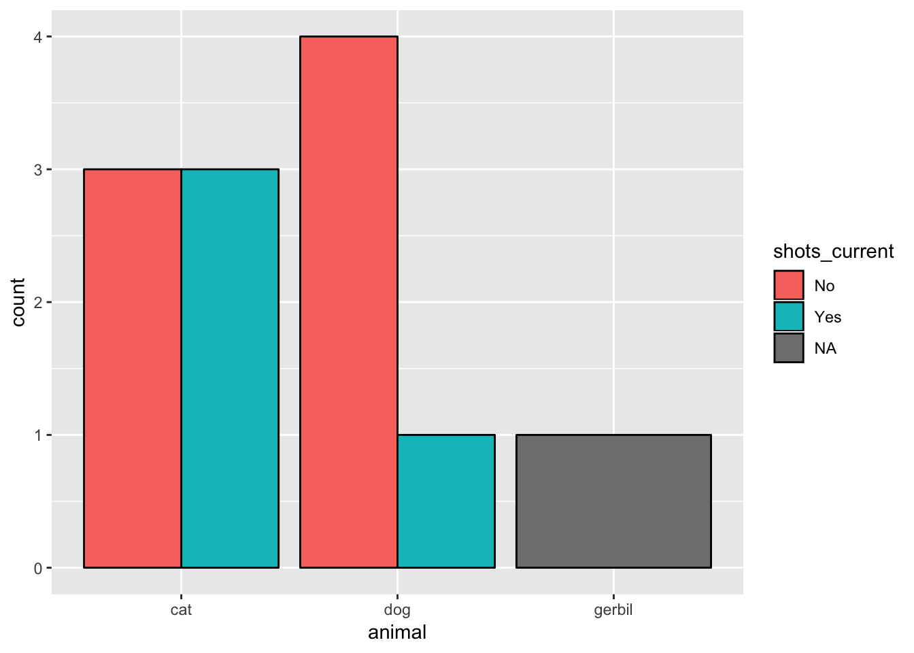

In this section, we’ll learn some skills about manipulating factor (categorical) data.
We’ll do this by making a bar plot progressively making it more complex. We’ll then dive into boxplots, a way to view the distribution of a variable across the categories of a different variable.
Reviewing Factors
Factors are frequently how R represents categorical data.
There are two kinds of factors:
factor - used for nominal data (“Ducks”, “Cats”, “Dogs”)`ordered- used for ordinal data (“10-30”,“31-40”,“41-60”)
We’ll manipulate our barplot and add more information using factors.
Here’s the simple dataset we’ll use to investigate how to work with factors in ggplot. Here we also introduce how to read in data stored in an R data file (an RDS) into a data frame in R. Note the similarities with reading in CSV files (read_rds() versus read_csv().)
We display the pets data frame by simply running the line containing pets.
library(tidyverse)
pets <- read_rds("data/pets.rds")
pets
We see that name and animal are stored as factors and age_category is stored as an ordinal factor. Note that name has three levels ordered as "0-2", "3-4", and "5-8".
A Basic Barplot using geom_bar()
By default, the geom_bar() function counts the number of values with each factor level. Note that you don’t map to a y-aesthetic here, because the y values are the counts.
Given this dataset, we might want to ask how many pets have the same name. What is the most popular name?
ggplot(data = pets, mapping = aes(x = name)) +
geom_bar()
Your Task
Try mapping another variable to fill (try both weight and animal). Are the results what you expected?
# Test out `weight` and `animal` here
# ONE SOLUTION
ggplot(data = pets, mapping = aes(x = name, fill = animal)) +
geom_bar()
ggplot(data = pets, mapping = aes(x = name, fill = weight)) +
geom_bar()
Faceting
Say you have another factor variable and you want to stratify the plots based on that. You can do that by supplying the name of that variable as a facet. Here, we facet our barplot by shots_current.
ggplot(data = pets, mapping = aes(x = name)) +
geom_bar() +
## have to specify facets using notation
facet_wrap(facets = ~ shots_current) +
## we make the x axis x angled for better legibility
theme(axis.text.x = element_text(angle = 90))
You might notice that there are blank spots for the categories in each facet. We can restrict the factors in each by using scale = "free_x" argument in facet_wrap().
ggplot(data = pets, mapping = aes(x = name)) +
geom_bar() +
## have to specify facets using notation
facet_wrap(facets = ~ shots_current, scale = "free_x") +
## we make the x axis x angled for better legibility
theme(axis.text.x = element_text(angle = 90))

Your Task
How many animals named “Morris” did not receive shots?
# ONE SOLUTION
ggplot(data = pets, mapping = aes(x = name)) +
geom_bar() +
facet_wrap(facets = ~ shots_current) +
theme(axis.text.x = element_text(angle = 90))

What happens when you replace the scale argument with "free_y"?
ggplot(data = pets, mapping = aes(x = name)) +
geom_bar() +
facet_wrap(facets = ~ shots_current, scale = "free_y") +
theme(axis.text.x = element_text(angle = 90))
What’s up with this ~ in the facets?
This is known as formula notation and might make a little more sense if we explore how to create a grid of smaller plots across two different variables. Note that animal appears on the vertical y axis and shots_current goes on the horizontal x axis. This is how to read this ~ in most settings in R.
ggplot(data = pets, mapping = aes(x = name)) +
geom_bar() +
facet_grid(facets = animal ~ shots_current) +
theme(axis.text.x = element_text(angle = 90))
Stacked Bars
Let’s see how many of each animal got shots. We can do this by mapping shots_current to fill. Note that we can also use color here to specify the highlighting color of the bars.
# We map color (the outline of the plot) to black to make it look prettier
# Note that we don't include `aes` in the `color = "black"` since we aren't
# mapping an aesthetic to a variable but rather just changing the setting.
ggplot(data = pets, mapping = aes(x = animal, fill = shots_current)) +
geom_bar(color = "black")

Proportional Barchart
We may only be interested in the relative proportions between the different categories. Visualizing this is useful for various 2 x 2 tests on proportions.
What percent of dogs did not receive shots?
ggplot(data = pets, mapping = aes(x = animal, fill = shots_current)) +
geom_bar(position = "fill", color = "black")

Dodge those bars!
Instead of stacking, we can also dodge the bars (move the bars so they’re beside each other).
ggplot(data = pets, mapping = aes(x = animal, fill = shots_current)) +
geom_bar(position = "dodge", color = "black")

Dodge those bars!
Instead of stacking, we can also dodge the bars (move the bars so they’re beside each other).
ggplot(data = pets, mapping = aes(x = animal, fill = shots_current)) +
geom_bar(position = "dodge", color = "black")

Your Task: Bar Charts
Given the pets data.frame, plot a stacked proportional barchart that shows age category by shots being current. Is the proportion of animals receiving shots the same across each age category?
Hints: think about what to map to x, and what to map to fill.
# ONE SOLUTION
ggplot(data = pets, mapping = aes(x = age_category, fill = shots_current)) +
geom_bar(position = "fill", color = "black")
Intermediate Folks: facet this plot by animal.
# Intermediate: Space for your answer here.
# ONE SOLUTION
ggplot(data = pets, mapping = aes(x = age_category, fill = shots_current)) +
geom_bar(position = "fill", color = "black") +
facet_wrap(facets = ~ animal)
Boxplots
Boxplots allow us to assess distributions of a continuous variable conditioned on categorical variables.
What does this tell us?
ggplot(data = pets, mapping = aes(x = shots_current, y = weight)) +
geom_boxplot()
Violin Plots
Violin plots are another useful way to visualize the data. They provide a more nuanced look at the data. They’re a density plot that’s mirrored around the y-axis.
ggplot(data = pets,
mapping = aes(x = age_category, y = weight, fill = age_category)) +
geom_violin()
Your task: How heavy are our pets?
Visualize weight by animal type as both a boxplot and a violin plot. What do you conclude? Which kind of animal weighs more on average than the other?
Note that the horizontal axis needs to correspond to the categorical variable and the vertical axis needs to correspond to a numeric variable.
## Space for your answer here
# ONE SOLUTION
ggplot(data = pets,
mapping = aes(x = animal, y = weight)) +
geom_boxplot()
ggplot(data = pets,
mapping = aes(x = animal, y = weight)) +
geom_violin()
Intermediate challenge: How would we plot both boxplots and a violin plot on the same graph?
## Intermediate: Space for your answer here
# ONE SOLUTION
ggplot(data = pets,
mapping = aes(x = animal, y = weight)) +
geom_boxplot(color = "blue") +
geom_violin(alpha = 0.1)
What you learned in this section
- Visualizing factor data
- Simple, stacked, stacked proportional, and dodged barplots
- Faceting a graph
- Boxplots and violin plots
LS0tCnRpdGxlOiAiUGFydCAyIC0gV29ya2luZyB3aXRoIEZhY3RvcnMgU09MVVRJT05TIgphdXRob3I6ICJUZWQgTGFkZXJhcyIKZGF0ZTogIjUvMTgvMjAxNyIKb3V0cHV0OiAKICBodG1sX2RvY3VtZW50OgogICAgY29kZV9kb3dubG9hZDogdHJ1ZQogICAgY29kZV9mb2xkaW5nOiBzaG93CiAgICBkZl9wcmludDogcGFnZWQKLS0tCgpgYGB7ciBzZXR1cCwgaW5jbHVkZT1GQUxTRX0Ka25pdHI6Om9wdHNfY2h1bmskc2V0KG1lc3NhZ2UgPSBGQUxTRSkKYGBgCgpJbiB0aGlzIHNlY3Rpb24sIHdlJ2xsIGxlYXJuIHNvbWUgc2tpbGxzIGFib3V0IG1hbmlwdWxhdGluZyBmYWN0b3IgKGNhdGVnb3JpY2FsKSBkYXRhLgoKV2UnbGwgZG8gdGhpcyBieSBtYWtpbmcgYSBiYXIgcGxvdCBwcm9ncmVzc2l2ZWx5IG1ha2luZyBpdCBtb3JlIGNvbXBsZXguIFdlJ2xsIHRoZW4gZGl2ZSBpbnRvIGJveHBsb3RzLCBhIHdheSB0byB2aWV3IHRoZSBkaXN0cmlidXRpb24gb2YgYSB2YXJpYWJsZSBhY3Jvc3MgdGhlIGNhdGVnb3JpZXMgb2YgYSBkaWZmZXJlbnQgdmFyaWFibGUuCgojIyBSZXZpZXdpbmcgRmFjdG9ycyAKCkZhY3RvcnMgYXJlIGZyZXF1ZW50bHkgaG93IFIgcmVwcmVzZW50cyBjYXRlZ29yaWNhbCBkYXRhLgoKVGhlcmUgYXJlIHR3byBraW5kcyBvZiBmYWN0b3JzOiAKCisgYGZhY3RvcmAgLSB1c2VkIGZvciAqbm9taW5hbCogZGF0YSAoIkR1Y2tzIiwgIkNhdHMiLCAiRG9ncyIpYAorIGBvcmRlcmVkYC0gdXNlZCBmb3IgKm9yZGluYWwqIGRhdGEgKCIxMC0zMCIsIjMxLTQwIiwiNDEtNjAiKQoKV2UnbGwgbWFuaXB1bGF0ZSBvdXIgYmFycGxvdCBhbmQgYWRkIG1vcmUgaW5mb3JtYXRpb24gdXNpbmcgZmFjdG9ycy4KCkhlcmUncyB0aGUgc2ltcGxlIGRhdGFzZXQgd2UnbGwgdXNlIHRvIGludmVzdGlnYXRlIGhvdyB0byB3b3JrIHdpdGggZmFjdG9ycyBpbiBgZ2dwbG90YC4gSGVyZSB3ZSBhbHNvIGludHJvZHVjZSBob3cgdG8gcmVhZCBpbiBkYXRhIHN0b3JlZCBpbiBhbiBSIGRhdGEgZmlsZSAoYW4gUkRTKSBpbnRvIGEgZGF0YSBmcmFtZSBpbiBSLiBOb3RlIHRoZSBzaW1pbGFyaXRpZXMgd2l0aCByZWFkaW5nIGluIENTViBmaWxlcyAoYHJlYWRfcmRzKClgIHZlcnN1cyBgcmVhZF9jc3YoKWAuKQoKV2UgZGlzcGxheSB0aGUgYHBldHNgIGRhdGEgZnJhbWUgYnkgc2ltcGx5IHJ1bm5pbmcgdGhlIGxpbmUgY29udGFpbmluZyBgcGV0c2AuCgpgYGB7cn0KbGlicmFyeSh0aWR5dmVyc2UpCnBldHMgPC0gcmVhZF9yZHMoImRhdGEvcGV0cy5yZHMiKQpwZXRzCmBgYAoKV2Ugc2VlIHRoYXQgYG5hbWVgIGFuZCBgYW5pbWFsYCBhcmUgc3RvcmVkIGFzIGBmYWN0b3JgcyBhbmQgYGFnZV9jYXRlZ29yeWAgaXMgc3RvcmVkIGFzIGFuIG9yZGluYWwgYGZhY3RvcmAuIE5vdGUgdGhhdCBgbmFtZWAgaGFzIHRocmVlIGxldmVscyBvcmRlcmVkIGFzIGAiMC0yImAsIGAiMy00ImAsIGFuZCBgIjUtOCJgLgoKIyMgQSBCYXNpYyBCYXJwbG90IHVzaW5nIGBnZW9tX2JhcigpYAoKQnkgZGVmYXVsdCwgdGhlIGBnZW9tX2JhcigpYCBmdW5jdGlvbiBjb3VudHMgdGhlIG51bWJlciBvZiB2YWx1ZXMgd2l0aCBlYWNoIGZhY3RvciBsZXZlbC4gTm90ZSB0aGF0IHlvdSBkb24ndCBtYXAgdG8gYSB5LWFlc3RoZXRpYyBoZXJlLCBiZWNhdXNlIHRoZSB5IHZhbHVlcyBhcmUgdGhlIGNvdW50cy4KCkdpdmVuIHRoaXMgZGF0YXNldCwgd2UgbWlnaHQgd2FudCB0byBhc2sgaG93IG1hbnkgcGV0cyBoYXZlIHRoZSBzYW1lIG5hbWUuIFdoYXQgaXMgdGhlIG1vc3QgcG9wdWxhciBuYW1lPwoKYGBge3J9CmdncGxvdChkYXRhID0gcGV0cywgbWFwcGluZyA9IGFlcyh4ID0gbmFtZSkpICsgCiAgZ2VvbV9iYXIoKQpgYGAKCiMjIFlvdXIgVGFzawoKVHJ5IG1hcHBpbmcgYW5vdGhlciB2YXJpYWJsZSB0byBgZmlsbGAgKHRyeSBib3RoIGB3ZWlnaHRgIGFuZCBgYW5pbWFsYCkuIEFyZSB0aGUgcmVzdWx0cyB3aGF0IHlvdSBleHBlY3RlZD8KCmBgYHtyfQojIFRlc3Qgb3V0IGB3ZWlnaHRgIGFuZCBgYW5pbWFsYCBoZXJlCgojIE9ORSBTT0xVVElPTgpnZ3Bsb3QoZGF0YSA9IHBldHMsIG1hcHBpbmcgPSBhZXMoeCA9IG5hbWUsIGZpbGwgPSBhbmltYWwpKSArCiAgZ2VvbV9iYXIoKQoKZ2dwbG90KGRhdGEgPSBwZXRzLCBtYXBwaW5nID0gYWVzKHggPSBuYW1lLCBmaWxsID0gd2VpZ2h0KSkgKwogIGdlb21fYmFyKCkKYGBgCgoKIyMgRmFjZXRpbmcKClNheSB5b3UgaGF2ZSBhbm90aGVyIGBmYWN0b3JgIHZhcmlhYmxlIGFuZCB5b3Ugd2FudCB0byBzdHJhdGlmeSB0aGUgcGxvdHMgYmFzZWQgb24gdGhhdC4gWW91IGNhbiBkbyB0aGF0IGJ5IHN1cHBseWluZyB0aGUgbmFtZSBvZiB0aGF0IHZhcmlhYmxlIGFzIGEgZmFjZXQuIEhlcmUsIHdlIGZhY2V0IG91ciBiYXJwbG90IGJ5IGBzaG90c19jdXJyZW50YC4KCmBgYHtyfQpnZ3Bsb3QoZGF0YSA9IHBldHMsIG1hcHBpbmcgPSBhZXMoeCA9IG5hbWUpKSArIAogIGdlb21fYmFyKCkgKyAKICAjIyBoYXZlIHRvIHNwZWNpZnkgZmFjZXRzIHVzaW5nIG5vdGF0aW9uCiAgZmFjZXRfd3JhcChmYWNldHMgPSB+IHNob3RzX2N1cnJlbnQpICsgCiAgIyMgd2UgbWFrZSB0aGUgeCBheGlzIHggYW5nbGVkIGZvciBiZXR0ZXIgbGVnaWJpbGl0eQogIHRoZW1lKGF4aXMudGV4dC54ID0gZWxlbWVudF90ZXh0KGFuZ2xlID0gOTApKQpgYGAKCllvdSBtaWdodCBub3RpY2UgdGhhdCB0aGVyZSBhcmUgYmxhbmsgc3BvdHMgZm9yIHRoZSBjYXRlZ29yaWVzIGluIGVhY2ggZmFjZXQuIFdlIGNhbiByZXN0cmljdCB0aGUgZmFjdG9ycyBpbiBlYWNoIGJ5IHVzaW5nIGBzY2FsZSA9ICJmcmVlX3giYCBhcmd1bWVudCBpbiBgZmFjZXRfd3JhcCgpYC4KCmBgYHtyfQpnZ3Bsb3QoZGF0YSA9IHBldHMsIG1hcHBpbmcgPSBhZXMoeCA9IG5hbWUpKSArIAogIGdlb21fYmFyKCkgKyAKICAjIyBoYXZlIHRvIHNwZWNpZnkgZmFjZXRzIHVzaW5nIG5vdGF0aW9uCiAgZmFjZXRfd3JhcChmYWNldHMgPSB+IHNob3RzX2N1cnJlbnQsIHNjYWxlID0gImZyZWVfeCIpICsgCiAgIyMgd2UgbWFrZSB0aGUgeCBheGlzIHggYW5nbGVkIGZvciBiZXR0ZXIgbGVnaWJpbGl0eQogIHRoZW1lKGF4aXMudGV4dC54ID0gZWxlbWVudF90ZXh0KGFuZ2xlID0gOTApKQpgYGAKCgojIyBZb3VyIFRhc2sKCkhvdyBtYW55IGFuaW1hbHMgbmFtZWQgIk1vcnJpcyIgZGlkIG5vdCByZWNlaXZlIHNob3RzPwoKYGBge3J9CiMgT05FIFNPTFVUSU9OCmdncGxvdChkYXRhID0gcGV0cywgbWFwcGluZyA9IGFlcyh4ID0gbmFtZSkpICsgCiAgZ2VvbV9iYXIoKSArIAogIGZhY2V0X3dyYXAoZmFjZXRzID0gfiBzaG90c19jdXJyZW50KSArCiAgdGhlbWUoYXhpcy50ZXh0LnggPSBlbGVtZW50X3RleHQoYW5nbGUgPSA5MCkpCmBgYAoKCldoYXQgaGFwcGVucyB3aGVuIHlvdSByZXBsYWNlIHRoZSBgc2NhbGVgIGFyZ3VtZW50IHdpdGggYCJmcmVlX3kiYD8KCmBgYHtyfQpnZ3Bsb3QoZGF0YSA9IHBldHMsIG1hcHBpbmcgPSBhZXMoeCA9IG5hbWUpKSArIAogIGdlb21fYmFyKCkgKyAKICBmYWNldF93cmFwKGZhY2V0cyA9IH4gc2hvdHNfY3VycmVudCwgc2NhbGUgPSAiZnJlZV95IikgKwogIHRoZW1lKGF4aXMudGV4dC54ID0gZWxlbWVudF90ZXh0KGFuZ2xlID0gOTApKQpgYGAKCiMjIyBXaGF0J3MgdXAgd2l0aCB0aGlzIGB+YCBpbiB0aGUgYGZhY2V0c2A/CgpUaGlzIGlzIGtub3duIGFzIGZvcm11bGEgbm90YXRpb24gYW5kIG1pZ2h0IG1ha2UgYSBsaXR0bGUgbW9yZSBzZW5zZSBpZiB3ZSBleHBsb3JlIGhvdyB0byBjcmVhdGUgYSBncmlkIG9mIHNtYWxsZXIgcGxvdHMgYWNyb3NzIHR3byBkaWZmZXJlbnQgdmFyaWFibGVzLiBOb3RlIHRoYXQgYGFuaW1hbGAgYXBwZWFycyBvbiB0aGUgdmVydGljYWwgYHlgIGF4aXMgYW5kIGBzaG90c19jdXJyZW50YCBnb2VzIG9uIHRoZSBob3Jpem9udGFsIGB4YCBheGlzLiBUaGlzIGlzIGhvdyB0byByZWFkIHRoaXMgYH5gIGluIG1vc3Qgc2V0dGluZ3MgaW4gUi4KCmBgYHtyfQpnZ3Bsb3QoZGF0YSA9IHBldHMsIG1hcHBpbmcgPSBhZXMoeCA9IG5hbWUpKSArIAogIGdlb21fYmFyKCkgKyAKICBmYWNldF9ncmlkKGZhY2V0cyA9IGFuaW1hbCB+IHNob3RzX2N1cnJlbnQpICsKICB0aGVtZShheGlzLnRleHQueCA9IGVsZW1lbnRfdGV4dChhbmdsZSA9IDkwKSkKYGBgCgoKIyMgU3RhY2tlZCBCYXJzCgpMZXQncyBzZWUgaG93IG1hbnkgb2YgZWFjaCBhbmltYWwgZ290IHNob3RzLiBXZSBjYW4gZG8gdGhpcyBieSBtYXBwaW5nIGBzaG90c19jdXJyZW50YCB0byBgZmlsbGAuIE5vdGUgdGhhdCB3ZSBjYW4gYWxzbyB1c2UgYGNvbG9yYCBoZXJlIHRvIHNwZWNpZnkgdGhlIGhpZ2hsaWdodGluZyBjb2xvciBvZiB0aGUgYmFycy4KCmBgYHtyfQojIFdlIG1hcCBjb2xvciAodGhlIG91dGxpbmUgb2YgdGhlIHBsb3QpIHRvIGJsYWNrIHRvIG1ha2UgaXQgbG9vayBwcmV0dGllcgojIE5vdGUgdGhhdCB3ZSBkb24ndCBpbmNsdWRlIGBhZXNgIGluIHRoZSBgY29sb3IgPSAiYmxhY2siYCBzaW5jZSB3ZSBhcmVuJ3QKIyBtYXBwaW5nIGFuIGFlc3RoZXRpYyB0byBhIHZhcmlhYmxlIGJ1dCByYXRoZXIganVzdCBjaGFuZ2luZyB0aGUgc2V0dGluZy4KZ2dwbG90KGRhdGEgPSBwZXRzLCBtYXBwaW5nID0gYWVzKHggPSBhbmltYWwsIGZpbGwgPSBzaG90c19jdXJyZW50KSkgKyAKICBnZW9tX2Jhcihjb2xvciA9ICJibGFjayIpCmBgYAoKIyMgUHJvcG9ydGlvbmFsIEJhcmNoYXJ0CgpXZSBtYXkgb25seSBiZSBpbnRlcmVzdGVkIGluIHRoZSByZWxhdGl2ZSBwcm9wb3J0aW9ucyBiZXR3ZWVuIHRoZSBkaWZmZXJlbnQgY2F0ZWdvcmllcy4gVmlzdWFsaXppbmcgdGhpcyBpcyB1c2VmdWwgZm9yIHZhcmlvdXMgMiB4IDIgdGVzdHMgb24gcHJvcG9ydGlvbnMuCgpXaGF0IHBlcmNlbnQgb2YgZG9ncyBkaWQgbm90IHJlY2VpdmUgc2hvdHM/CgpgYGB7cn0KZ2dwbG90KGRhdGEgPSBwZXRzLCBtYXBwaW5nID0gYWVzKHggPSBhbmltYWwsIGZpbGwgPSBzaG90c19jdXJyZW50KSkgKyAKICBnZW9tX2Jhcihwb3NpdGlvbiA9ICJmaWxsIiwgY29sb3IgPSAiYmxhY2siKQpgYGAKCiMjIERvZGdlIHRob3NlIGJhcnMhCgpJbnN0ZWFkIG9mIHN0YWNraW5nLCB3ZSBjYW4gYWxzbyBkb2RnZSB0aGUgYmFycyAobW92ZSB0aGUgYmFycyBzbyB0aGV5J3JlIGJlc2lkZSBlYWNoIG90aGVyKS4KCmBgYHtyfQpnZ3Bsb3QoZGF0YSA9IHBldHMsIG1hcHBpbmcgPSBhZXMoeCA9IGFuaW1hbCwgZmlsbCA9IHNob3RzX2N1cnJlbnQpKSArIAogIGdlb21fYmFyKHBvc2l0aW9uID0gImRvZGdlIiwgY29sb3IgPSAiYmxhY2siKQpgYGAKCgojIyBEb2RnZSB0aG9zZSBiYXJzIQoKSW5zdGVhZCBvZiBzdGFja2luZywgd2UgY2FuIGFsc28gZG9kZ2UgdGhlIGJhcnMgKG1vdmUgdGhlIGJhcnMgc28gdGhleSdyZSBiZXNpZGUgZWFjaCBvdGhlcikuCgpgYGB7cn0KZ2dwbG90KGRhdGEgPSBwZXRzLCBtYXBwaW5nID0gYWVzKHggPSBhbmltYWwsIGZpbGwgPSBzaG90c19jdXJyZW50KSkgKyAKICBnZW9tX2Jhcihwb3NpdGlvbiA9ICJkb2RnZSIsIGNvbG9yID0gImJsYWNrIikKYGBgCgojIyBZb3VyIFRhc2s6IEJhciBDaGFydHMKCkdpdmVuIHRoZSBgcGV0c2AgYGRhdGEuZnJhbWVgLCBwbG90IGEgc3RhY2tlZCBwcm9wb3J0aW9uYWwgYmFyY2hhcnQgdGhhdCBzaG93cyBhZ2UgY2F0ZWdvcnkgYnkgc2hvdHMgYmVpbmcgY3VycmVudC4gSXMgdGhlIHByb3BvcnRpb24gb2YgYW5pbWFscyByZWNlaXZpbmcgc2hvdHMgdGhlIHNhbWUgYWNyb3NzIGVhY2ggYWdlIGNhdGVnb3J5PwoKSGludHM6IHRoaW5rIGFib3V0IHdoYXQgdG8gbWFwIHRvIGB4YCwgYW5kIHdoYXQgdG8gbWFwIHRvIGBmaWxsYC4KCmBgYHtyfQojIE9ORSBTT0xVVElPTgpnZ3Bsb3QoZGF0YSA9IHBldHMsIG1hcHBpbmcgPSBhZXMoeCA9IGFnZV9jYXRlZ29yeSwgZmlsbCA9IHNob3RzX2N1cnJlbnQpKSArCiAgZ2VvbV9iYXIocG9zaXRpb24gPSAiZmlsbCIsIGNvbG9yID0gImJsYWNrIikKYGBgCgpJbnRlcm1lZGlhdGUgRm9sa3M6IGZhY2V0IHRoaXMgcGxvdCBieSBgYW5pbWFsYC4gCgpgYGB7cn0KIyBJbnRlcm1lZGlhdGU6IFNwYWNlIGZvciB5b3VyIGFuc3dlciBoZXJlLgoKIyBPTkUgU09MVVRJT04KZ2dwbG90KGRhdGEgPSBwZXRzLCBtYXBwaW5nID0gYWVzKHggPSBhZ2VfY2F0ZWdvcnksIGZpbGwgPSBzaG90c19jdXJyZW50KSkgKwogIGdlb21fYmFyKHBvc2l0aW9uID0gImZpbGwiLCBjb2xvciA9ICJibGFjayIpICsKICBmYWNldF93cmFwKGZhY2V0cyA9IH4gYW5pbWFsKQpgYGAKCgojIyBCb3hwbG90cwoKQm94cGxvdHMgYWxsb3cgdXMgdG8gYXNzZXNzIGRpc3RyaWJ1dGlvbnMgb2YgYSBjb250aW51b3VzIHZhcmlhYmxlIGNvbmRpdGlvbmVkIG9uIGNhdGVnb3JpY2FsIHZhcmlhYmxlcy4KCldoYXQgZG9lcyB0aGlzIHRlbGwgdXM/IAoKYGBge3J9CmdncGxvdChkYXRhID0gcGV0cywgbWFwcGluZyA9IGFlcyh4ID0gc2hvdHNfY3VycmVudCwgeSA9IHdlaWdodCkpICsgCiAgZ2VvbV9ib3hwbG90KCkKYGBgCgojIyBWaW9saW4gUGxvdHMKClZpb2xpbiBwbG90cyBhcmUgYW5vdGhlciB1c2VmdWwgd2F5IHRvIHZpc3VhbGl6ZSB0aGUgZGF0YS4gVGhleSBwcm92aWRlIGEgbW9yZSBudWFuY2VkIGxvb2sgYXQgdGhlIGRhdGEuIFRoZXkncmUgYSBkZW5zaXR5IHBsb3QgdGhhdCdzIG1pcnJvcmVkIGFyb3VuZCB0aGUgeS1heGlzLgoKYGBge3J9CmdncGxvdChkYXRhID0gcGV0cywgCiAgICAgICBtYXBwaW5nID0gYWVzKHggPSBhZ2VfY2F0ZWdvcnksIHkgPSB3ZWlnaHQsIGZpbGwgPSBhZ2VfY2F0ZWdvcnkpKSArIAogIGdlb21fdmlvbGluKCkKYGBgCgojIyBZb3VyIHRhc2s6IEhvdyBoZWF2eSBhcmUgb3VyIHBldHM/CgpWaXN1YWxpemUgYHdlaWdodGAgYnkgYGFuaW1hbGAgdHlwZSBhcyBib3RoIGEgYm94cGxvdCBhbmQgYSB2aW9saW4gcGxvdC4gV2hhdCBkbyB5b3UgY29uY2x1ZGU/IFdoaWNoIGtpbmQgb2YgYW5pbWFsIHdlaWdocyBtb3JlIG9uIGF2ZXJhZ2UgdGhhbiB0aGUgb3RoZXI/CgpOb3RlIHRoYXQgdGhlIGhvcml6b250YWwgYXhpcyBuZWVkcyB0byBjb3JyZXNwb25kIHRvIHRoZSBjYXRlZ29yaWNhbCB2YXJpYWJsZSBhbmQgdGhlIHZlcnRpY2FsIGF4aXMgbmVlZHMgdG8gY29ycmVzcG9uZCB0byBhIG51bWVyaWMgdmFyaWFibGUuCgpgYGB7cn0KIyMgU3BhY2UgZm9yIHlvdXIgYW5zd2VyIGhlcmUKIyBPTkUgU09MVVRJT04KZ2dwbG90KGRhdGEgPSBwZXRzLCAKICAgICAgIG1hcHBpbmcgPSBhZXMoeCA9IGFuaW1hbCwgeSA9IHdlaWdodCkpICsgCiAgZ2VvbV9ib3hwbG90KCkKCmdncGxvdChkYXRhID0gcGV0cywgCiAgICAgICBtYXBwaW5nID0gYWVzKHggPSBhbmltYWwsIHkgPSB3ZWlnaHQpKSArIAogIGdlb21fdmlvbGluKCkKYGBgCgpJbnRlcm1lZGlhdGUgY2hhbGxlbmdlOiBIb3cgd291bGQgd2UgcGxvdCBib3RoIGJveHBsb3RzIGFuZCBhIHZpb2xpbiBwbG90IG9uIHRoZSBzYW1lIGdyYXBoPwoKYGBge3J9CiMjIEludGVybWVkaWF0ZTogU3BhY2UgZm9yIHlvdXIgYW5zd2VyIGhlcmUKCiMgT05FIFNPTFVUSU9OCmdncGxvdChkYXRhID0gcGV0cywgCiAgICAgICBtYXBwaW5nID0gYWVzKHggPSBhbmltYWwsIHkgPSB3ZWlnaHQpKSArIAogIGdlb21fYm94cGxvdChjb2xvciA9ICJibHVlIikgKwogIGdlb21fdmlvbGluKGFscGhhID0gMC4xKQpgYGAKCgojIyBXaGF0IHlvdSBsZWFybmVkIGluIHRoaXMgc2VjdGlvbgoKLSBWaXN1YWxpemluZyBmYWN0b3IgZGF0YQotIFNpbXBsZSwgc3RhY2tlZCwgc3RhY2tlZCBwcm9wb3J0aW9uYWwsIGFuZCBkb2RnZWQgYmFycGxvdHMgCi0gRmFjZXRpbmcgYSBncmFwaAotIEJveHBsb3RzIGFuZCB2aW9saW4gcGxvdHM=